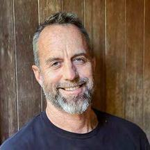
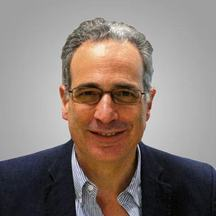

Now City leadership and senior advisors.
Now City Inc. is a vertically integrated developer and operator working on the West Coast, from the Pacific Northwest to Baja California. We help communities get value out of underused land and buildings, then stay to look after the result. We treat a district as a living, coordinated system rather than a portfolio of buildings, and we plan on a horizon measured in decades. First homes are scheduled for 2029.
The company works through four layers designed and delivered together rather than sequenced as separate concerns: industrialized construction, off-site fabrication and healthy materials; green infrastructure, energy, water, mobility and ecology sized at district scale; regenerative placemaking, walkable streets, civic gathering and local economic development; and innovative finance, capital structures built for long-term stewardship rather than a short exit.
There are three brands under one company. Now City Neighborhoods is the resident-facing side at nowcity.life. Now City Labs provides pre-development intelligence and execution services to landowners, operators and municipalities. NowCity.ai builds the underwriting software the deal teams use. The parent company site is nowcity.co.
In Salem the company works as a district strategy and systems integrator, supported by a bench of development, construction, infrastructure and operating partners, so early phases can be delivered by experienced regional teams while Now City holds continuity of vision and long-term stewardship.

Erik has spent 30 years in property operations, learning how buildings age and how well they serve the people who use them. Alongside it he built a 20-year career in technology, business development, and startup leadership, learning to design systems and align teams around outcomes rather than tasks. Now City is the synthesis of the two: districts treated as living systems, where capital, design, and operations are engineered together from the start instead of colliding after the fact.
Ritchie leads design, development, and operations. He holds a Bachelor of Architecture from Carnegie Mellon University, a Master of Science in Architecture and Urban Design from Columbia University, and is currently completing his MBA at Johns Hopkins University. His career spans urban design, mobility, real estate development, and entrepreneurship, including being part of the team that led Citi Bike's expansion at Lyft, supporting capital raising and development with a visionary NYC mixed-use developer with $3B+ in total development project capitalization, and co-founding a 7-figure ecommerce business.
Growing up between New York and Beijing gave Ritchie a unique perspective on how vibrant, walkable districts improve quality of life. Seeing both cities continually invest in dense, mixed-use neighborhoods contrasted sharply with much of America's low-density, car-centric cities. That experience became the foundation for Now City's mission: creating beautiful, sustainable districts where people can live, work, and gather within walkable communities.
Ritchie leads design, development, and operations. B.Architecture from Carnegie Mellon, MS in Architecture and Urban Design from Columbia, MBA candidate at Johns Hopkins. Previously a mobility planner at Lyft in New York, where he led bike-share expansion, and later supported capital raise and development of a 1,000-unit multifamily mixed-use project in NYC.

Michael is an economist, attorney, and one of the architects of the 2012 JOBS Act. Adjunct Professor at Bard Business School and author of Put Your Money Where Your Life Is, The Local Economy Solution, and others. He advises Now City on community-rooted ownership, local capital formation, and finance models that keep wealth in place.
Neal, FAIA, FCNU, directs the western U.S. urban and architectural design practice at Torti Gallas. His work focuses on master plans, form-based codes, and the public realm - especially the revitalization of declining urban centers, brownfields, and aging suburbs. He advises Now City on urbanism, master planning, and entitlement strategy.
AI-native development, advanced modeling, data intelligence, automation, and modern delivery methods reduce design friction, compress timelines, lower soft costs, and provide the reporting backbone institutional capital now requires.
Wellness, prosperity, and ecology data-driven community design.
Modern methods that reduce cost, shorten schedules & minimize waste.
Integrated energy, water & mobility systems that cut OpEx & boost resilience.
Stacked incentives + carbon & brand capital to enhance returns.